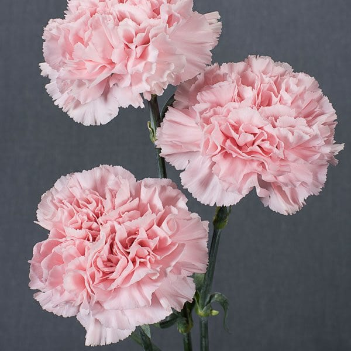

Módulo 3.1 · Mayo 2026
Generación de imágenes con IA
De los modelos de difusión al arte del prompt: cómo las máquinas aprendieron a pintar.
Lo que veremos hoy
Sección 1
Modelos de difusión
Qué son, cómo aprenden, cómo generan. Forward diffusion, backward diffusion, entrenamiento, CLIP.
Sección 2
Panorama actual
Los modelos líderes de 2026: DALL·E 3, Midjourney, Flux, BloqueNeón y más.
Sección 3
Arte del prompt
Vocabulario fotográfico, adjetivos multidimensionales, épocas, equipo y palabras emocionales.
Una abeja en flor, con luz dorada

Esta imagen no es una fotografía real: la generó por completo un modelo de difusión. ¿Qué prompt crees que la produjo?
A extreme close-up, outdoor macro photography of a bee in a flower, at golden hour
- El modelo nunca vio esta abeja específica.
- Sintetizó la imagen desde ruido aleatorio, guiado por el texto.
- Generada con DALL·E 3 en <30 segundos.
Husky siberiano con cielo dramático

El modelo entendió «Husky siberiano», «atardecer dramático» y «fotografía épica», y los combinó en píxeles coherentes. ¿Adivinas el prompt?
A vibrant photograph of a husky, wide shot, outdoors, sunset photo at golden hour, wide-angle lens, soft focus
Un castillo medieval en blanco y negro

Estética monocromática, niebla invernal, arquitectura medieval — todo en una instrucción de texto. ¿Cómo lo pedirías tú?
A black and white photograph of a castle in the middle of a hill, landscape shot, outdoors, winter tundra, wide-angle lens
- «Black and white» no es un filtro aplicado después — el modelo generó directamente en escala de grises.
- Aprendió el concepto de fotografía B&N del corpus de entrenamiento.
Yo soy fotógrafo
Antes de hablar de lo que hace la IA con las imágenes, quiero situarme: la fotografía es parte de mi práctica personal — no solo un caso de uso académico. Es parte de la razón por la que doy este curso.
¿Por qué importa esto en este curso?
Porque los modelos de difusión aprendieron a generar imágenes del mismo corpus que estudié cuando aprendí fotografía: composición, luz, momento decisivo, B&N, bokeh.
Cuando le dices a un modelo «Leica aesthetic» o «golden hour», no está ejecutando un algoritmo — está reproduciendo lo que aprendió de millones de fotógrafos.
El modelo vio las mismas fotos que yo estudié.
Todas estas imágenes son generadas
Ninguna de las imágenes que vimos es una fotografía real. Todas fueron sintetizadas píxel a píxel por modelos de difusión.
¿Cómo funcionan los modelos de difusión?
Del ruido aleatorio a la imagen coherente — el proceso paso a paso.
La metáfora del televisor analógico

Los modelos de difusión comienzan exactamente así: ruido estático puro. Desde ahí, eliminan el ruido en pasos pequeños hasta revelar una imagen coherente.
Hacia adelante
Tomar una imagen real y agregarle ruido gradualmente hasta destruirla. Este proceso se puede calcular matemáticamente.
Hacia atrás
Aprender a revertir ese proceso. Dado ruido, predecir qué hay debajo. Esto es lo que entrena la red neuronal.
Lo sencillo vs. lo difícil
Difusión hacia adelante
Agregar ruido es trivial. En cada paso se suma una pequeña cantidad de ruido gaussiano.
La fórmula es explícita: en T pasos, cualquier imagen queda convertida en ruido puro.
No hay nada que aprender aquí — es matemática directa.
Difusión hacia atrás
Eliminar ruido es extraordinariamente difícil. Hay infinitas imágenes posibles que podrían dar origen al mismo ruido.
La red neuronal aprende una distribución probabilística del ruido a eliminar en cada paso.
Esto requiere entrenamiento con millones de imágenes.
Difusión hacia adelante: destruir la imagen
$\mathbf{x}_0$
$\mathbf{x}_1$
$\mathbf{x}_2$
$\mathbf{x}_T$
Difusión hacia atrás: reconstruir desde el ruido
$\mathbf{x}_T$
Denoising 1
Denoising 2
$\mathbf{x}_0$
¿Cómo aprende la red a eliminar ruido?
Tomar una imagen del dataset
Se selecciona aleatoriamente una imagen real del corpus de entrenamiento (millones de imágenes con texto).
Aplicar ruido en un paso t aleatorio
Se usa la fórmula forward para agregar exactamente t pasos de ruido. El modelo recibe la imagen ruidosa y el valor de t.
La red predice el ruido añadido
La red neuronal (U-Net) intenta predecir el ruido exacto que se agregó en el paso anterior.
Calcular la pérdida
Se compara el ruido predicho con el ruido real. La diferencia es la función de pérdida: $\mathcal{L} = \|\epsilon - \epsilon_\theta(\mathbf{x}_t, t)\|^2$
Backpropagation — actualizar pesos $\theta$
Los gradientes fluyen de vuelta por la red. Con millones de imágenes y muchas iteraciones, la red aprende a predecir el ruido con gran precisión.
¿Qué aprende el modelo?
Dataset — flores reales

El modelo se entrena con miles de fotografías de flores reales: rosas, tulipanes, girasoles, orquídeas.
- Aprende la distribución de colores, formas y texturas.
- Aprende qué es «natural» en una flor (proporciones, curvas, variaciones de color).
- Aprende también los textos que acompañan esas imágenes.
Generadas — flores sintéticas
Con el modelo entrenado, se pueden generar flores que no existen en ningún dataset.
- Rosa azul imposible en la naturaleza.
- Orquídea con patrones geométricos.
- Girasol doble con pétalos de cristal.
Las flores generadas son indistinguibles de las reales para el ojo humano — y a veces más perfectas.
¿Cómo guía el texto a la imagen?
CLIP (Contrastive Language–Image Pretraining) aprendió a medir qué tan «parecidos» son un texto y una imagen mediante similitud coseno:
CLIP fue entrenado con 400 millones de pares texto–imagen para aprender este espacio de similitud.
¿Cómo guía la generación?
Durante la difusión hacia atrás, en cada paso de denoising, el gradiente de CLIP empuja la imagen generada hacia la dirección que maximiza la similitud con el texto del prompt.
- Sin CLIP: ruido → imagen aleatoria.
- Con CLIP: ruido → imagen que coincide con el texto.
Es como tener un crítico que en cada paso de 1000 dice: «más parecido a la abeja, menos ruido en esta zona».
¿Hasta dónde pueden llegar?

«Relojes derretidos sobre la arena, estilo Salvador Dalí, 3D render hiperrealista» — algo imposible de fotografiar.
Variaciones
Generar 100 versiones ligeramente distintas del mismo prompt.
Edición dirigida
Cambiar «un reloj de arena» por «un reloj de cristal» manteniendo el resto.
Inpainting
Rellenar una región de la imagen con contenido nuevo consistente.
Panorama de herramientas
¿Qué herramientas existen en 2026 y cómo se comparan?
El ecosistema de generación de imágenes
El modelo que usamos en este curso
Basado en Gemini 3.1 Flash Image. Disponible en Gemini App, Google Search (AI Mode), AI Studio, API y Google Ads.
- Velocidad de generación con calidad de estudio profesional.
- Renderizado de texto preciso dentro de imágenes.
- Preserva consistencia de personajes en múltiples generaciones.
- Lo usamos por su calidad, no por dónde está hospedado.
El más accesible para el público general
Integrado directamente en ChatGPT Plus. Se le puede pedir a ChatGPT que genere imágenes con lenguaje natural.
- Excelente comprensión de instrucciones complejas y texto en imágenes.
- Fuerte en composiciones narrativas y conceptos abstractos.
- Moderación activa — evita contenido inapropiado.
El estándar de calidad fotorrealista y artística
Accesible vía Midjourney.com. Históricamente el modelo más usado por diseñadores y artistas.
- Calidad visual premium: texturas, iluminación, coherencia estética.
- Parámetros avanzados: --ar (aspect ratio), --stylize, --chaos.
- Requiere suscripción de pago; interfaz vía Discord.
El referente open source
Modelo de código abierto disponible en Stability AI. Puede ejecutarse localmente sin conexión a internet.
- Completamente personalizable: fine-tuning, LoRA, ControlNet.
- Comunidad enorme de modelos derivados (Civitai, Hugging Face).
- Requiere GPU potente para uso local; alternativas en la nube.
Alta eficiencia y resolución excepcional
Desarrollado por los creadores originales de Stable Diffusion. Disponible en Black Forest Labs.
- Generación más rápida que modelos equivalentes.
- Excelente en texto dentro de imágenes (letras, carteles).
- Versión open source (Flux.1 Dev) disponible en Hugging Face.
Diseño y texto en imágenes
Adobe Firefly está integrado en Photoshop y Illustrator. Ideogram es el líder en generación de tipografía.
- Firefly: legalmente seguro — entrenado solo con contenido Adobe Stock.
- Ideogram: único en generar texto coherente dentro de imágenes.
- Ambos orientados a diseño gráfico y comunicación visual.
Nano Banana 2 — el modelo del curso
A lo largo de este módulo exploraremos Nano Banana 2 de Google — actualmente uno de los modelos más poderosos del mercado, basado en Gemini 3.1 Flash Image.
- Conocimiento avanzado: usa la base de Gemini y búsqueda web en tiempo real.
- Preservación de sujetos: mantiene consistencia de personajes entre generaciones.
- Renderizado de texto preciso: textos nítidos y correctos dentro de imágenes.
- Velocidad: genera en segundos gracias a la arquitectura Flash.
- Edición natural: describes los cambios en texto y el modelo los aplica.
¿Por qué este modelo?
No por dónde está hospedado, sino porque combina velocidad con calidad de estudio profesional. Es accesible desde:
- Gemini App y Google Search (AI Mode).
- AI Studio y la API de Google.
- Soporte nativo de relaciones de aspecto 4:1, 1:4, 8:1, 1:8.
- Resoluciones 1K / 2K / 4K.
Arte del Prompt
La imagen es el nuevo lenguaje — y el prompt es tu pincel.
El prompt es tu pincel

El prompt no es solo una descripción — es un lenguaje técnico que el modelo traduce a píxeles. Hay tres niveles:
Corto y claro
Una frase puede bastar. «A bee on a flower» funciona — el modelo completa los detalles.
Largo y detallado
Más términos = más control. Sujetar estilo, luz, composición, cámara y emoción.
Experimental
Combinar estilos inesperados produce resultados únicos. «Bauhaus + cyberpunk».
Ejemplos de prompts — galería variada

full body photo of a horse in a space suit

A Charming Hedge Maze Dotted By Rose Bushes And Intricately Designed Lampposts, Digital Art, Trending On Artstation

A Grey Kitten Standing On A Pizza In Outer Space, Dark Cyan Galaxy And Stars In Background, 4K Photoshopped Image

A Portrait Of A Dog In A Library, Sigma 85Mm F/1.4

An Oil Painting Of A Young Boy With Long Blonde Hair Sleeping In Bed With A Checkered Comforter

A 3D Render Of A Teapot In The Shape Of A King With Red Hair, Realistic, Artstation
¿Cuánto texto necesita el modelo?

grainy abstract experimental expired film photo of a woman in red dress, talking angrily on mobile phone, gesticulating angrily, in 1960s New York City by Saul Leiter, 50mm lens, cinematic colors, oversaturated filter, blur, reflection, refraction, distortion, rain drops, smears, smudges, blur, cinestill 800t
Cada término añade una capa de control: estilo fotográfico, condición climática, composición, emoción, textura del film.

🌈🚀🤩, octane 3D render
El modelo interpretó «rainbow rocket» literalmente y expandió el escenario por cuenta propia. Menos palabras = más creatividad del modelo.
Tres principios básicos del prompting
Principio 1
A veces menos es más
Un prompt de 5 palabras bien elegidas puede superar a uno de 50 palabras genéricas. La calidad de los términos importa más que la cantidad.
Incorrecto: «a nice beautiful stunning amazing dog in the park»
Correcto: «golden retriever, bokeh, 85mm, golden hour»
Principio 2
Frases «amuleto»
Ciertos términos funcionan como amplificadores universales de calidad visual:
Úsalos al final del prompt para elevar la calidad general.
Principio 3
Vocabulario del dominio
El modelo fue entrenado con texto de expertos. Usar terminología especializada activa ese conocimiento:
- Fotografía: «Leica M6», «f/1.4», «medium format»
- Arte: «chiaroscuro», «impasto», «sfumato»
- 3D: «octane render», «subsurface scattering»
Cinco categorías de modificadores
Terminología fotográfica
El vocabulario fotográfico actúa como modificador universal. Cualquier imagen mejora con estos términos:
Adjetivos multidimensionales
La calidad visual se construye capa por capa. Un buen prompt combina luz, textura, material y atmósfera:
Luz
cinematic · dramatic · rim light · soft diffused · neon glow · candlelight
Textura
weathered · polished · rough · translucent · iridescent · crystalline
Material
marble · chrome · fabric · frosted glass · aged wood · liquid metal
Atmósfera
misty · foggy · hazy · smoky · ethereal · otherworldly
Años y décadas
Mencionar una era activa un conjunto completo de estilos visuales implícitos — colores, grano, paleta, moda:
Ejemplo: «1970s film grain, Kodachrome colors, analog photo» → resultado con colores saturados, grano visible y estética de diapositiva de los 70s.
Equipo fotográfico
Nombrar la cámara establece el bokeh, la profundidad de campo y la estética general del resultado:
Formato medio
Hasselblad 500C
Cuadrado, bokeh esférico suave, ideal para retratos de alta gama.
Street photo
Leica M6
Grano fino, composición íntima, color sutil. Estética documental.
Épico
IMAX camera
Ultra-nítido, escala monumental, sensación cinematográfica.
Reforzar estilos — referencias cruzadas
Mezclar referencias cruzadas produce resultados únicos. El modelo combina lo que conoce de cada referencia:
Por artista
«in the style of Rembrandt» · «inspired by Ansel Adams» · «Alphonse Mucha illustration»
Por movimiento
Bauhaus · Art Nouveau · Cyberpunk · Surrealism · Impressionism · Brutalism
Cruzado
«Bauhaus meets cyberpunk» · «Dalí + National Geographic» · «Art Deco sci-fi»
El modelo entiende emociones
Tranquilidad y armonía
Ejemplo: «A serene oil painting of a child in a red coat, peaceful, soft lighting, pastel tones, tender atmosphere»

Celebración y vitalidad
Ejemplo: «A vibrant, energetic oil painting of a child in a red coat, bright colors, dynamic composition, joyful atmosphere»

Melancolía y soledad
Ejemplo: «A melancholic oil painting of a child in a red coat, muted tones, gloomy, washed-out, somber atmosphere»

Tensión y drama
Ejemplo: «A dark, ominous oil painting of a child in a red coat, threatening atmosphere, sinister shadows, harrowing mood»

Palabras de tamaño y estructura

A sweeping, organic landscape photo of a giant, ancient Banyan tree with an ornate, winding trunk and a vast, leafy canopy spreading across the frame, full of natural and complex shapes.
Palabras de tamaño y estructura

A wide-angle, minimalist architectural photograph of a massive, perfectly symmetrical modern concrete library building, emphasizing its monumental scale and geometric precision against a clear sky.
Palabras de tamaño y estructura

A detailed close-up product shot of a high-end luxury watch movement, showcasing the intricate, precise, and finely crafted gears, rubies, and decorative patterns in a tidy composition.
Palabras de tamaño y estructura

A charming, loose watercolor and ink sketch of a single, expressive, randomly placed wild daisy on textured paper, showing casual brushstrokes and playful pencil lines.
Looks, Vibes, -Punks, -Waves


Vaporwave
neon, pink, blue, geometric, futuristic, '80s
Vaporwave gas station at night, neon pink and blue, geometric, futuristic, 1980s aesthetic
Cyberpunk
1990s, dyed hair, spiky, graphic elements
Cyberpunk street scene, 1990s, neon signs, dyed hair characters, spiky graphic elements
Steampunk
gold, copper, brass, Victoriana
Steampunk inventor's workshop, gold, copper, brass, Victorian era machinery
Gothic Fantasy
stone, dark, lush, nature, mist, mystery
Gothic fantasy cottage in a dark forest, stone, lush nature, mist, mysterious, angular architecture
Afrofuturismo
futuristic and African
Afrofuturism portrait, futuristic African aesthetic, vibrant colors, advanced technology
Biopunk
organic, greens, slimes, plants, futuristic, weird
Biopunk laboratory, organic green slimes, living plants fused with technology, futuristic weird aesthetic
Fotografía
Cuando piensas como fotógrafo, el modelo responde como cámara. Encuadre, luz, lente, película, género — cada decisión cambia el resultado.
Preguntas clave para construir tu prompt

- ¿Cómo está compuesta la foto?
- ¿Cuál es el vibe emocional?
- ¿Qué tan cerca estamos del sujeto? ¿Qué ángulo?
- ¿Cuánta profundidad de campo?
- ¿Cómo está iluminado? ¿Desde dónde?
- ¿Luz artificial o natural? ¿Qué hora del día?
- ¿Qué cámara o lente?
- ¿Interior o exterior? ¿Digital o película?
- ¿En qué año se tomó? ¿Dónde se publicó?
Fórmula 1 — retrato editorial vintage

A close-up, black and white studio photographic portrait of SUBJECT, dramatic backlighting, 1973 photo from Life Magazine
encuadre + tipo película + contexto + iluminación + año y uso
Ejemplo:
A close-up, black and white studio photographic portrait of a white horse, dramatic backlighting, 1973 photo from Life Magazine
Fórmula 2 — paisaje urbano vibrante

A vibrant photograph of SUBJECT, wide shot, outdoors, sunset photo at golden hour, wide-angle lens, soft focus, shot on iPhone 6, on Flickr in 2007
vibe + encuadre + contexto + iluminación + lente y cámara + año y uso
Ejemplo:
A vibrant photograph of New York, wide shot, outdoors, sunset photo at golden hour, wide-angle lens, soft focus, shot on iPhone 6, on Flickr in 2007
Proximidad — del extreme close-up al extreme long shot

Extreme Close-up
Solo el rostro, detalles extremos.
Film still of a cackling man, bushy moustache, extreme close-up shot of his moustache

Close-up
A close-up of a woman's face, captured in low light with a soft focus, gentle pink hue, lightly blurred features, Cinestill 800t

Medium / Waist
Encuadre desde la cintura.
Film still of an elderly black man playing chess, medium shot, mid-shot

Long / Wide
Film still of a woman drinking coffee, walking to work, long shot, wide shot, full shot

Extreme Long
Sujeto pequeño en paisaje enorme.
Film still, extreme wide shot of an elephant alone on the savannah, extreme long shot
Posición — desde dónde mira la cámara

Overhead / High
Film still, establishing shot of bustling farmers market, golden hour, high angle

Low / Worm's-Eye
Film still, gangster squirrel counting his money, low angle, shot from below, worms eye view

Aerial / Bird's Eye
Aerial photo of a coral reef that looks like a labyrinth

Tilted / Dutch
Film still of stylish girl dancing on school desk, tilted frame, 35°, Dutch angle, cinematography from music video

Over-the-Shoulder
Film still, over-the-shoulder shot of two pirates having an angry discussion, eyepatch, from adventure movie 'SHIVER ME TIMBERS' (1999)
Velocidad de obturación

Fast shutter speed
action photo, 1/1000 sec shutter — congela el movimiento.
Action photo of a hummingbird mid-flight, 1/1000 sec shutter, every feather visible, frozen motion, vibrant garden background.

Slow shutter speed
1 sec shutter, long exposure — captura estelas de luz.
Long exposure of a busy city intersection at night, 1 sec shutter, colorful light trails from passing cars, cinematic atmosphere.
Efectos especiales

Bokeh
shallow depth of field, blur, out-of-focus background
Close-up portrait of a cat in a sunlit meadow, shallow depth of field, creamy out-of-focus background, soft bokeh lights.

Tilt shift
narrow strip in-focus — efecto de miniatura.
Aerial view of a bustling Mediterranean harbor, narrow strip in-focus, miniature effect, vibrant colors, toy-like boats and buildings.

Motion blur
movimiento dinámico borroso
A cyclist racing through a forest path, dynamic motion blur on the background and wheels, sense of high speed and energy.
Tipos de lente

Telephoto (Sigma 500mm f/5)
Toma lejana, sensación voyeurística.
Sigma 500mm f/5, candid voyeuristic shot of a red fox in the distance, soft compressed background, natural wildlife photography.

Macro (Sigma 105mm F2.8)
Detalles extremos en escenas pequeñas.
Sigma 105mm F2.8, extreme close-up of a morning dewdrop on a leaf, hyper-detailed texture, microscopic scenery.

Wide angle (15mm)
Más escena, distorsión de perspectiva.
15mm wide angle shot of a vast desert canyon, expansive perspective distortion, dramatic sky, sweeping landscape.

Fish-eye
Ultra gran angular, el centro «bulges».
Ultra wide angle fish-eye view inside a circular library, center bulges outward, distorted curved walls, immersive 360-degree feel.
Iluminación natural y exterior

Golden Hour / Dusk
High-quality DSLR photo of cute pig in a big blue hat in a Dickensian back street at dusk, long shadows, beams of sunlight

Blue Hour / Twilight
'Blue hour' photography, a fox sitting on a bench, cool twilight lighting, 5am

Midday / Harsh Sun
Photograph of a stylish black man talking animatedly on phone, mid-shot, outdoors in LA, harsh overhead sunlight, midday, summer

Overcast / Flat
Photograph of a stylish black woman listening excitedly on phone, mid-shot, outdoors in Chicago, overcast flat lighting, 4pm, cloudy afternoon

Shadow / Silhouette
A Latina businesswoman, sat outdoors, mostly silhouetted in soft shadow, harsh sunlight, corporate plaza
Iluminación artificial e interior

High-Key
neutral, flat, even, corporate, professional, ambient
professional studio portrait, high-key lighting, white background

Low-Key
dramatic, single light source, high-contrast
low-key dramatic lighting, single spotlight, film noir mood

Backlighting
adds a glow around subject edge
softly backlit, gentle rim light, glowing edges

Colourful Lighting
defined colors like purple, yellow
dramatic neon lighting, purple and yellow, colored gels

Flash Photography
harsh flash, raw documentary look
harsh direct flash, raw photography, paparazzi style

Direction
lit from above / below / side lighting
dramatic side lighting, lit from below for effect
Tipos de película — vintage clásicos

Kodachrome
Strong reds and greens, vintage feel. Clásico de la fotografía americana de mediados del siglo XX.
Kodachrome style photo, classic mid-century American street scene with strong saturated reds and deep greens, clear blue sky, vintage car, film grain.

Lomography
Oversaturated, hue-shifted images. Vignette en las esquinas, colores inesperados.
Lomography style photograph of a music festival, oversaturated, hue-shifted colors with unexpected blues and purples, pronounced vignetting on the corners, happy and distorted subjects.

Polaroid / Instax
Soft focus, square format, flash-y. Estética instantánea retro muy reconocible.
A soft-focus, square-format portrait of friends laughing, shot with an instant film camera, showing a characteristic vintage blur, slight light streaks, and a retro flash look.
Tipos de película — vigilancia, antiguas y experimentales

CCTV / Surveillance
Security footage, dashcam, black-and-white. Añade misterio y sensación de vigilancia.
A high-angle, black-and-white grainy security footage image of a deserted urban street at night, with date/time overlay and low-resolution artifacting, suggesting surveillance.

Daguerreotype
Very early film stock, 1800s, vintage. Tonos metálicos únicos del primer proceso fotográfico.
A mid-1800s style full portrait of a man in formal attire, with the distinct, tarnished, and unique metallic mirror-like surface of a daguerreotype plate, complete with age patina.

Double Exposure
Name two subjects to combine them both. Superpone dos imágenes en una sola composición.
A high-contrast double exposure image merging a profile portrait of a woman with an image of a complex mountain landscape, creating a surreal blend of both subjects.
Tipos de película — químicos y especiales

Cyanotype
Blue-and-white photo printing method. Proceso fotográfico histórico que produce tonos azules intensos.
A surreal cyanotype print of a delicate fern leaf on textured paper, displaying a classic, deep monochromatic blue and white tonality with historical photo process texture.

Infrared Photography
Weird film that makes plants pink and skies dark. Resultados surrealistas con vegetación luminosa.
An Ektachrome-style infrared photograph of a serene Japanese garden, where all trees and foliage appear in vibrant, glowing pink and red, and the lake water is dark and moody.

Bleach Bypass
Muted, desaturated look popularizado en Saving Private Ryan. Look cinematográfico de guerra.
A gritty, high-contrast, desaturated cinematic image of a lone soldier walking through a bombed-out European street in winter, captured with a harsh bleach bypass film look, reminiscent of Saving Private Ryan.
Tipos de película — formatos y trucos

Contact Sheet
Get multiple images in a grid. Perfecto para mostrar una serie de tomas fotográficas.
A grid-format contact sheet of 12 black and white film photography thumbnails, showing various uncropped shots of a busy street artist at work, with sprocket holes and negative numbers visible along the edges.

Colour Splash
One colour retained, everything else B&W. Efecto dramático de contraste cromático.
A dramatic color splash street photograph of a bustling, monochromatic black and white rainy night scene, where only the vibrant red of an open umbrella is in sharp, full color, contrasting with the gray world.

Anaglyph
3D photography format, red-cyan glasses effect. Clásico efecto 3D de las películas de los años 50.
A striking anaglyph stereoscopic image of a historic New York City skyscraper, featuring the classic red-and-cyan 3D glasses offset effect, with a nostalgic 1950s 3D movie feeling.
Film stills — robar el look de una serie/película
Puedes nombrar una película o show de TV específico (idealmente con el año) para «robar el look» sin necesidad de conocer los detalles técnicos.
Prompt base: «A man in a Grim Reaper costume, from…»

TV Friends, S3 (1997)
Look sitcom cálido

Starsky & Hutch (1975)
Vintage 70s

Grand Budapest (2014)
Paleta Wes Anderson

Blade Runner 2049
Futurista oscura
Film stills — el prompt influye en TODO
Prompt base 2: «A pile of books on a bedside table, from…»

Citizen Kane (1941)
Blanco y negro dramático

Jaws (1975)
Estética thriller 70s
El mismo sujeto, distinto contexto
El mismo sujeto cambia dramáticamente según el contexto de publicación. Prompt base: «Photo of a 50-year old white man, silver hair, neat beard, wearing a red gilet, thick-rimmed glasses…»

ESPN — Deportivo
…action sports photography, fast shutter speed from ESPN

Vogue — Fashion
…editorial fashion photography, from Vogue magazine

NYT — Periodístico
…candid street portrait, photojournalism from The New York Times

Corporativo
…professional corporate portrait, from investor prospectus

Celebrity Event
…flash photography, event photography, film premier from celebrity news website
Ilustración
Más allá de la fotografía: medios analógicos, digitales, técnicos, 3D y series animadas. Cada categoría es un universo de posibilidades.
Medios analógicos monocromáticos

Stencil / Banksy
Stencil street art of a man in top hat with a dog, Banksy style, on a brick wall

Ballpoint Pen Art
Ballpoint pen art drawing of a cat in sunglasses, blue ink, detailed

Pencil Sketch
Pencil sketch of a cute robot with a briefcase and monocle, loose lines

Charcoal Sketch
Charcoal sketch portrait of a man with glasses, moody, textured

Woodcut
Woodcut illustration of a dragonfly and a cameraman, Japanese style

Field Journal
Field journal line art of a beaver, naturalist illustration, detailed

Etching
Etching illustration of mysterious figures in pointed hats in a forest, detailed crosshatching

Colouring-In Sheet
Colouring-in sheet of a city skyline with sun, black outlines on white, simple
Medios analógicos a color

Watercolor
Watercolor painting of two dinosaurs playing baseball, playful, loose washes

Oil Painting
Oil painting of a man riding a bicycle, expressionist, vibrant colors

Acrylic on Canvas
Acrylic on canvas portrait of an elegant woman, expressive brushstrokes

Ukiyo-e
Ukiyo-e Japanese woodblock print style illustration of a white cat, traditional

Chinese Watercolor
Chinese watercolor painting of strawberries in a bowl, delicate, traditional

Pastels
Pastel drawing of a pig and a frog, playful, soft colors, textured

Airbrush
Airbrush illustration of an old man in a hat, caricature style, smooth gradients

Coloured Pencil
Coloured pencil detailed illustration of an aerial view of a small American town, realistic
Medios digitales

Corporate Memphis / Alegria
Alegria corporate memphis illustration of business people dancing, flat design, bold colors

Vector Art
Vector art portrait of a woman with purple hair, bold lines, flat colors, digital

Low Poly
Low poly 3D style illustration of a surprised bearded man, geometric facets, triangles

Sticker Illustration
Sticker illustration of a green frog saying CHIMBA, cute, die-cut, white border

Digital Painting
Digital painting of a magical cat with glowing green eyes, fantasy, detailed

Layered Paper
Layered paper craft illustration of friends having dinner, cut paper, 3D depth
Estilos instructivos y técnicos

Blueprint
Blueprint technical drawing of a globe mechanism, white lines on blue background, detailed

Patent Drawing
Patent drawing of a wolf, technical illustration, multiple views, annotations

Botanical
Botanical illustration of a succulent plant with berries, scientific accuracy, vintage

Cutaway
Cutaway illustration of a cartoon mouse character, revealing internal mechanics

IKEA Manual
IKEA assembly manual style illustration of a cat being assembled, step-by-step, simple line art

Scientific Diagram
Scientific diagram of a tomato cross-section, labeled, educational illustration

Mythological Map
Mythological fantasy map, illustrated, vintage cartography, sea monsters

Voynich Manuscript
Voynich manuscript style illustration, mysterious botanical diagram, ancient, cryptic
Ilustraciones 3D y texturizadas

Isometric 3D
Isometric 3D illustration of a futuristic city block, teal and dark, detailed, pixel-perfect

3D Render (Octane/Blender)
3D render of a cute purple cat with glowing eyes, octane render, pink neon lighting, detailed

Claymation / Aardman
Claymation style characters in a garden scene, Aardman Animation look, stop-motion feel

Video Game Screenshot
Screenshot of a medieval town from a fantasy RPG game, PlayStation 2, 2004

Scratch Art / Foil
Scratch art, gold lines on black background, portrait with flowing hair, detailed

Perler Beads / Pixel Craft
Perler beads pixel art of a cute robot face, colorful, craft style
Personajes y cartoon

Anime
Anime style girl character with big eyes, mechanical headband, Japanese animation

Pixar Style
Cute Pixar style character, woman with purple hair and glasses, 3D render, white background

Studio Ghibli
Studio Ghibli style illustration of a magical treehouse, lush forest, Miyazaki inspired

Vintage Disney
Vintage Disney animation style, two white dragons playing among flowers, 1940s cel animation

Pixel Art
Pixel art scene of a mouse character in a chemistry lab, retro gaming style, 16-bit

Hanna Barbera
Hanna Barbera 1960s cartoon style, adventurer woman in a jungle, Scooby Doo aesthetic

1970s Vintage
1970s grainy vintage illustration of a futuristic train in the clouds, retro sci-fi

Character Sheet
Character reference sheet of a cyberpunk warrior woman, multiple angles, full body, design document
«En el estilo de…» series animadas

South Park
Angry office worker at desk, in the style of South Park animation

The Simpsons
Elderly scientist woman looking worried, in the style of The Simpsons

Spirited Away
A frog character in a traditional Japanese room, in the style of Spirited Away

Adventure Time
A wizard warrior character, in the style of Adventure Time

Powerpuff Girls
A space explorer character, in the style of Powerpuff Girls

Vintage Looney Tunes
A rabbit magic show, in the style of vintage Looney Tunes 1961

Bojack Horseman
A cat character on vacation, in the style of Bojack Horseman

Family Guy
A confused penguin character, in the style of Family Guy animation
Historia del arte
El modelo conoce siglos de historia visual. Nombrar un período, un movimiento o un artista activa toda esa biblioteca de referencias.
Historia del arte temprana

Cave Paintings / Lascaux
Cave painting of a cat sitting on a chair, pre-historic, Lascaux style, primitive

Ancient Egyptian Mural
Ancient Egyptian mural of a cat with sunglasses, tomb fresco, hieroglyphics, register format

Fayum Portrait
Fayum mummy portrait of a cat wrapped in cloth, from Egypt, on wood, realistic

Roman Mosaic
Roman mosaic of a cat, Ancient Rome, opus tessellatum, stone tiles

Byzantine Icon
Byzantine icon of a cat on a golden throne, Christian icon style, halo, Eastern Roman

Illuminated Manuscript
Gilded illuminated manuscript of astronaut cats, lavish, vellum, gold leaf, medieval

Minoan Mural
Decorative Minoan mural of astronaut cats, 2000 BCE, ancient artefact, colorful

Roman / Pompeii
Ancient Roman painting of a cat at table, Fourth Style, Pompeii
Del Renacimiento al arte moderno

Renaissance (1400-1600)
Renaissance painting of a man with an otter by a river, 1500s, oil on panel

Baroque (17th c)
Baroque painting of a woman washing dishes, dramatic lighting, Caravaggio style, 17th century

Rococo (1730)
Rococo painting of a cat with a bowl, late Baroque, Antoine Watteau style, ornate

Impressionism
Impressionist painting of people in a purple garden, Monet style, loose brushwork, light

Post-Impressionism
Post-impressionist night cafe scene, Cézanne, van Gogh style, bold colors

Art Nouveau
Art Nouveau illustration of a fox, flowing organic lines, decorative, floral motifs

Realism (19th c)
Realist painting of a man with a parrot, 19th century, Gustave Courbet style

Symbolism
Symbolist painting of a woman and illness, dreamlike, 19th century, mysterious
Movimientos de arte moderno — parte I

Art Deco (1925)
Art deco poster of a futuristic city, 1925, vintage, streamline moderne, luxury

Bauhaus (1930s)
Bauhaus style cat at the beach, 1930s, geometric, Paul Klee, Kandinsky

Cubism (1910)
Cubist painting of a cat with sunglasses, Picasso style, geometric, fragmented

Surrealism
Surrealist painting of cats descending stairs, Magritte style, dreamlike, impossible

Abstract Expressionism
Abstract expressionist painting of a cat, paint splatters, Jackson Pollock style

Dada / Dadaism (1920)
Dada style artwork of a cat with a cigarette, 1920, absurd, collage, assemblage

Expressionism (1912)
Expressionist landscape, German Expressionism, 1912, distorted forms, emotional

Fauvism (1905)
Fauvist painting of a woman, Henri Matisse style, 1905, bold non-naturalistic colors
Movimientos de arte moderno — parte II

Futurism (1913)
Futurist painting of a cat reading newspaper, Italian Futurism, 1913, dynamism, motion

Pop Art (1960s)
Pop Art style cat portraits, Andy Warhol, 1960s, repeated, bright colors

Surrealism / de Chirico
Metaphysical painting of a cat on a chair, de Chirico style, Italian, surreal architecture

Mexican Muralism
Mexican muralist painting of workers at a table, Diego Rivera, bold, monumental

Neo-Expressionism (1980s)
Neo-Expressionist painting of dressed-up cats, 1980s, raw, bold brushwork

Street Art / Graffiti
Street art photograph of a cat with steampunk goggles, urban wall, graffiti
Estilos de artistas distintivos
Edward Hopper (1942)
A cat in a red dress alone in a diner at night, Edward Hopper, 1942, solitary mood
Keith Haring
Keith Haring style cats and figures, bold black outlines, simple forms, dynamic
Salvador Dalí
Salvador Dali surrealist landscape with melting cats, desert, dreamlike
Vincent van Gogh
Street café at night, Vincent van Gogh style, swirling sky, post-impressionist
Basquiat
Basquiat style robot on wheels, neo-expressionist, raw, graffiti, text elements
Gustav Klimt
Gustav Klimt style lemons and fruit, symbolist, gold leaf, decorative, 1908
Roy Lichtenstein
Roy Lichtenstein style cat hand, half-tone dots, comic detail, pop art, bold
HR Giger
HR Giger biomechanical dark structure, dark, intricate, alien aesthetic
Arte 3D y aplicaciones
El modelo no se limita a 2D. Puede generar escultura, moda, espacios, textiles, cerámica — todo con la misma fluidez del prompt.
Materiales de escultura y estatuas

Bronze Statue
Bronze statue bust of a man, verdigris patina, detailed, outdoor

Marble Statue
White marble statue of a woman, classical style, smooth, museum lighting

Jade Sculpture
Green jade sculpture of a smiling Buddha figure, polished, ornate

Sand Sculpture
Sand sculpture of a woman's face on the beach, detailed, natural

Topiary / Plant
Topiary garden sculpture of the Statue of Liberty, living green plant art

Ice Carving
Ice carving of the Statue of Liberty, transparent, crystalline, blue tones

Butter Sculpture
Butter sculpture of an elderly woman, yellow, soft, detailed carving

Plastic / Fiberglass
Giant fiberglass cartoon bee statue, bright yellow and black, outdoor public art
Moda, cuerpo humano y accesorios

Fashion Photography
Three models in matching green outfits, fashion photography, editorial

Hairstyles
Avant-garde sculptural updo hairstyle, editorial fashion photography

Nail Art
Intricate nail art with spiral patterns, macro photography, iridescent colors

Tattoos and Body Art
Geometric black and white tattoo design, tribal patterns, sharp lines in a forearm

Jewellery
Silver octopus pendant necklace with red gemstone, product photography

Accessories and Bags
Cute avocado-shaped leather handbag, product photography, pastel colors
Lugares y espacios

Architecture
Organic curved wooden architecture building surrounded by trees, natural design

Domestic Interiors
Cosy mid-century modern living room, colorful furniture, warm lighting, stylish

Public Realm / Cityscapes
Futuristic public plaza with red illuminated vertical structures, night

Gardens and Landscaping
Lush English garden with lavender rows and golden statues, sunset

Attractions and Installations
Interactive art installation, futuristic playground with slides, turquoise

Events and Festivals
Dramatic event decoration with crystal spheres and purple lighting, festive
Papel y textiles

Papercraft / Origami
Origami Lamborghini car made of black and white geometric paper, detailed

Pop-Up Book
Pop-up book of a neon city skyline, 3D paper art, colorful, night scene

Embroidery
Embroidered hare in a circular frame, detailed thread work, botanical

Amigurumi
Amigurumi crocheted Earth globe with googly eyes, cute, yarn, handmade

Needle Felting
Needle felted portrait of a grumpy long-haired creature, wool, soft, handmade

Knitting Patterns
Knitted pattern with palm trees and zigzag design, yellow red blue, textile art
Cerámica y vidrio

Ceramic / Kintsugi
Ceramic bust of a face with golden Kintsugi repair lines, art pottery

Porcelain
Porcelain octopus teapot, white with blue details, delicate, ornate

Azulejo (Portuguese Tile)
Portuguese Azulejo blue and white tile art pattern with spider motif

Stained Glass
Stained glass window of a colorful monkey, geometric, vibrant, church style

Snowglobe
Snowglobe with a rocket launch inside, miniature scene, magical

Tile Art / Mosaic
Mosaic tile art cat face, yellow and blue ceramic pieces, decorative wall art
«Fotografiando» tu obra 3D
Además de definir el sujeto, puedes controlar cómo la IA lo «fotografía». La misma escultura se transforma completamente según cómo elijas presentarla:
Estilo 1
Dreamy Autochrome
Marble bust of a woman, surrounded by foliage, dreamy autochrome pinhole photography, soft purple tones
Resultado: atmósfera onírica, colores virados, sensación histórica.
Estilo 2
Studio Photography
Marble bust of a woman, studio photography, dark grey background, softly backlit, gentle smoke effect, photo courtesy Museum of Art
Resultado: presentación museística profesional, elegante y limpia.
Estilo 3
Neon Editorial
Marble bust of a woman with sunglasses, dramatic low-key neon lighting, light painting, editorial photo from magazine
Resultado: look editorial moderno, dramático y sorprendente.
Resumen y próximos pasos
Fundamentos técnicos
Modelos de difusión, forward y backward diffusion, cadenas de Markov, entrenamiento semi-supervisado y el rol de CLIP.
Modelos actuales
Nano Banana 2, DALL·E 3, Midjourney v6.1, Stable Diffusion, Flux, Ideogram y Adobe Firefly.
Prompt Engineering
Emociones, estructura, vibes estéticos (-punks, -waves), vocabulario de dominio y frases amuleto.
Fotografía
Encuadres, ángulos, lentes, tipos de iluminación, películas creativas y géneros fotográficos.
Ilustración e Historia del Arte
Medios analógicos y digitales, movimientos artísticos, artistas referentes y estilos 3D.
¡Ahora es tu turno!
Usa Nano Banana 2 o tu modelo favorito y empieza a crear. Combina vocabularios de diferentes secciones para resultados únicos.
«La imagen es el
nuevo lenguaje»
Sección 1
Modelos de difusión
Forward + backward diffusion, entrenamiento, CLIP. El ruido como punto de partida creativo.
Sección 2
Panorama 2026
BloqueNeón, DALL·E 3, Midjourney, Flux, Stable Diffusion, Firefly, Ideogram.
Sección 3
Arte del prompt
Terminología fotográfica, adjetivos multidimensionales, épocas, equipo, referencias y palabras emocionales.